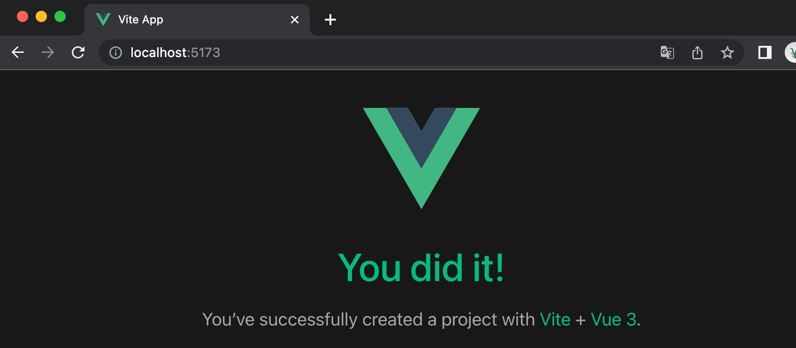

Vue3 インストール
1、スタンドアロンバージョン
Vue.js の公式サイトから最新バージョンを直接ダウンロードし、<script>タグで導入します。
2、CDN を使用する方法
以下に海外で比較的安定している 2 つの CDN を紹介します。中国国内ではまだ良いものは見つかっていないため、現時点ではローカルにダウンロードすることをお勧めします。
-
cdnjs : https://cdnjs.cloudflare.com/ajax/libs/vue/3.0.5/vue.global.js
-
Staticfile CDN（中国国内） : https://cdn.staticfile.net/vue/3.0.5/vue.global.js
-
unpkg：https://unpkg.com/vue@3/dist/vue.global.js、npm で公開されている最新バージョンと一致します。
ES モジュールビルドバージョンを使用して、より現代的でモジュール化された開発環境を作成できます：
サンプル
<script type="module">
import { createApp } from 'https://unpkg.com/vue@3/dist/vue.esm-browser.js'
createApp({
data() {
return {
message: 'Hello サンプル!'
}
}
}).mount('#app')
</script>
試してみる »
3、NPM 方式
npm のインストール速度が遅いため、このチュートリアルでは Taobao のミラーとそのコマンド cnpm を使用しています。インストールと使用方法の紹介は次を参照してください：Taobao NPM ミラーの使用。
npm のバージョンは 3.0 より大きい必要があります。このバージョンより低い場合はアップグレードが必要です：
# 查看版本 $ npm -v 2.3.0 #升级 npm cnpm install npm -g # 升级或安装 cnpm npm install cnpm -g
Vue.js で大規模なアプリケーションを構築する場合、cnpm でのインストールをお勧めします。cnpm は Webpack や Browserify モジュールバンドラーとよく連携できます。その後、コマンドラインで次のコマンドを実行します：
# 最新稳定版 $ npm init vue@latest
このコマンドは、Vue 公式のプロジェクトスキャフォールディングツールである create-vue をインストールして実行します。
<hr> <h2>コマンドラインツール</h2> <p>Vue.js は、大規模なシングルページアプリケーションを迅速に構築するための公式コマンドラインツールを提供します。</p> <p>Vue 3 の場合、npm で利用可能な Vue CLI v4.5 を @vue/cli として使用する必要があります。アップグレードするには、最新バージョンの @vue/cli をグローバルに再インストールする必要があります：</p> <pre># vue-cli をグローバルにインストール yarn global add @vue/cli # または cnpm install -g @vue/cli</pre> <p>インストール完了後、バージョンを確認します:</p> <pre> $ vue --version @vue/cli 4.5.11 </pre><p>次に Vue プロジェクトで実行します：</p><pre>vue upgrade --next</pre> <p><strong>注意：</strong>vue-cli 3.x と vue-cli 2.x は同じ vue コマンドを使用しています。以前に vue-cli 2.x をインストールしている場合、Vue-cli 3.x に置き換えられます。</p> <p>それでも旧バージョンの vue init 機能を使用する必要がある場合は、ブリッジツールをグローバルにインストールできます：</p> <pre>npm install -g @vue/cli-init # vue init の実行効果は vue-cli@2.x と同じになります vue init webpack my-project</pre> <h3>プロジェクトの作成</h3> <p>以下の例では、vue init コマンドを使用してプロジェクトを作成します。TypeScript やテストサポートなどのオプション機能のプロンプトが表示されます：</p>$ npm init vue@latest Need to install the following packages: create-vue@3.6.1 Ok to proceed? (y) y Vue.js - The Progressive JavaScript Framework # 这里需要进行一些配置，项目名输入 サンプル-vue3-test，其他默认回车即可 -> Project name: … サンプル-vue3-test -> Add TypeScript? … No / Yes -> Add JSX Support? … No / Yes -> Add Vue Router for Single Page Application development? … No / Yes -> Add Pinia for state management? … No / Yes -> Add Vitest for Unit Testing? … No / Yes -> Add an End-to-End Testing Solution? › No -> Add ESLint for code quality? … No / Yes Scaffolding project in /Users/サンプル/サンプル-test/サンプル-vue3/サンプル-vue3-test... Done. Now run: cd サンプル-vue3-test npm install npm run dev
機能を有効にするかどうか不明な場合は、Enter キーを押して No を選択できます。
プロジェクトが作成されたら、次の手順で依存関係をインストールし、開発サーバーを起動します：
$ cd サンプル-vue3-test $ npm install $ npm run dev VITE v4.3.4 ready in 543 ms ➜ Local: http://localhost:5173/ ➜ Network: use --host to expose ➜ press h to show help
上記のコマンドが正常に実行されたらアクセスしhttp://localhost:5173/、出力結果は次のようになります：

注意：Vue.js は IE8 およびそれ以下の IE バージョンをサポートしていません。
グラフィカルインターフェースの使用
私たちは以下を使用してvue uiコマンドでグラフィカルインターフェースを開いてプロジェクトを作成・管理できます：
vue ui
上記のコマンドを実行すると、ブラウザにグラフィカルインターフェースが開き、プロジェクト作成をガイドします：

Vite
Vite は Web 開発用のビルドツールであり、ネイティブの ES モジュールインポート方式により、電光石火のコールドスタートを実現できます。
ターミナルで次のコマンドを実行することで、Vite を使用して Vue プロジェクトを迅速に構築できます。構文形式は次のとおりです：
npm init vite-app <project-name>
プロジェクト サンプル-vue3-test2 を作成：
$ npm init vite-app サンプル-vue3-test2
プロジェクトを実行：
$ cd サンプル-vue3-test2 $ cnpm install $ cnpm run dev > サンプル-vue3-test2@0.0.0 dev /Users/サンプル/サンプル-test/vue3/サンプル-vue3-test2 > vite [vite] Optimizable dependencies detected: vue Dev server running at: > Local: http://localhost:3000/
開くhttp://localhost:3000/、表示は次のようになります：